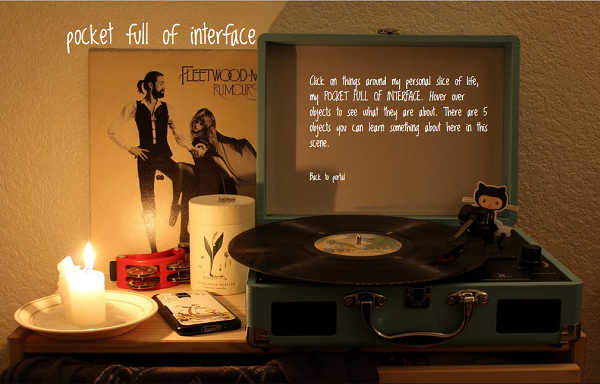
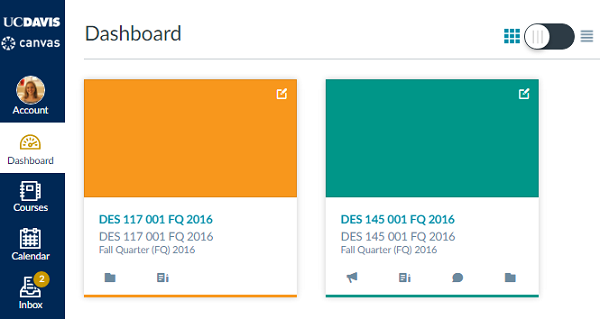
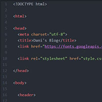

Pocket Full of Interface
02/07/17
In my first attempt at UX/UI in this interactive design, I think certain features bring this site to life. I have a still image of a space in my room, and certain items can be clicked on for more info. I think this is a good experiential design because it's putting my audience right into my room, as if they were picking up the objects themselves. I added an extra audio player element to add to this experience; the player plays my favorite song on the record that's sitting on the record player. Now they have not only visual but audio experience. Lastly, I think that by making them highlight as the objects are hovered over has always been something I wanted to see in "find it" games like ISPY. This helps the audience navigate and find the objects they need to with ease.
User interface critique: Canvas
01/31/17
Looking at the canvas website for teachers and students, I would first say that the colors are very attractive and the overall design is pleasing to the eye. One thing I would change is the vertical nav bar, which I think could have a bit more width. Through the lens of Bill DeRouchey's Learning IxD From Everyday Objects, the heirarchy is not bad on canvas. Actions and headings are separated by spaces to attain group and individual heirarchy that gives the page an overall cleanliness. For clarity, the website uses symbols and colors to organize all the different pathways you could take on the site. Lastly for purpose, canvas maintains its essence by providing sections based on what students are going to want to look for regarding their classes; calendar, courses, assignments due soon, and notificaitons on graded materials are what students look for when navigating a website in this educational genre. I would say that canvas is a unique design that, with practice, can be quite user friendly. However, there are numerous pathways to get to the same things sometimes, which might result in confusion for the user.
User interface critique: Atom
01/12/17
Atom is a program I use often in my web development projects. Its interface is so successful in that it allows me to get projects done in the quickest time possible. Its background is a dark color- and by no accident. I really appreciate the clear yet mild contrast of the background and the characters. The makers of atom know that coders work long hours programming, and often times in the evening when the brain is buzzing and calculating ideas. Another great feature of atom is the color coded style format. This was very helpful for me as a novice coder. All in all, the user interface of Atom is unbeatable when it comes to practicing code successfully.